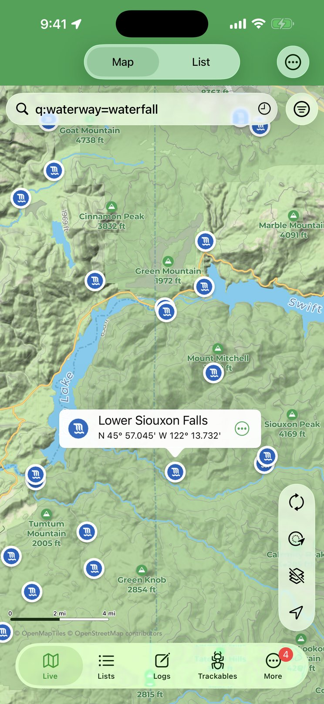
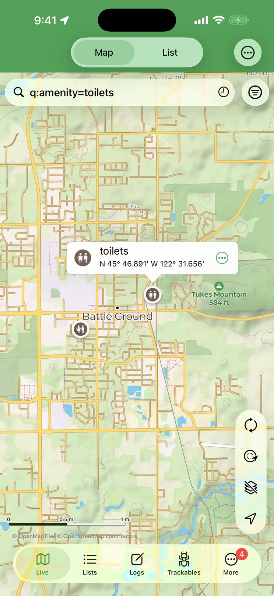

OpenStreetMap POI Search
Find parking, trailheads, restrooms, viewpoints — any OpenStreetMap point of interest — right on Cachly’s map with a q: query, online or offline.
How It Works

Geocaching is as much about the places around a cache as the cache itself — where to park, where the trail starts, whether there’s a restroom or a picnic table nearby. With a Pro Offline Map selected as your map source, the Live map’s search field can query OpenStreetMap points of interest directly. Type q: followed by an OpenStreetMap tag expression, for example q:amenity=parking, and tap Search on the keyboard. Cachly searches the visible map area, reports how many results it found, and drops a pin for each one with the matching map icon (a P for parking, a picnic table, a viewpoint…).
Queries use the Overpass turbo Wizard syntax. In short:
| Write | To match |
|---|---|
key=value | Features with that exact tag, e.g. amenity=toilets. |
key=* | Features that have the tag at all, whatever its value, e.g. historic=*. |
key!=value | Features whose tag is not that value. |
key~"text" | A regular-expression match on the value, e.g. name~"Park". |
a and b, a or b | Both conditions, or either one. Use parentheses to group: (a or b) and c. |
type:node, type:way | Restrict results to points (node) or lines and areas (way). Ways are pinned at their center. |
"quoted value" | Wrap a value in quotes if it contains a space or punctuation, e.g. name="Main Street". |
A query has to be a tag expression like the ones above. A bare word (q:parking) or a place phrase (q:parking around Denver) isn’t understood and Cachly reports a syntax error. To search somewhere else, pan the map there and search again. The OpenStreetMap Map Features page is the reference for tag names and values.
q: queries are answered by the public Overpass API, so they need an internet connection, and the search area is limited to what’s on screen. If a query is too broad for the area (thousands of results) it can time out — zoom in or add a condition. If the current map source isn’t a Pro Offline Map, Cachly reminds you that queries can only be used with Pro Offline Maps.Viewing a POI

Tap a result pin to open its callout: the feature’s icon, its name (or its feature type when it has no name) and its coordinates. The ⋯ button on the callout opens a menu:
- Tags — opens a screen listing every OpenStreetMap tag on the feature as key and value pairs: opening hours, website, phone, fee, surface, wheelchair access, operator… whatever the mappers recorded. Long-press a row to copy its value.
- Create Offline Geocache — turns the POI into an offline geocache at those coordinates so you can save it to a list and navigate to it later.
- Navigate to Location — opens the compass/navigation map to the POI.
- Remove — takes that pin off the map.
Result pins stay on the map — alongside your caches, and across searches for caches — until you run another q: query (which replaces them) or remove them individually.
Searching POIs Offline
When you have no signal, the downloaded map itself can be searched. Turn on Offline Searching under More › Settings › Cachly Pro › Pro Offline Maps (or long-press the layers button on the map and flip it in the menu’s Options). The search field’s placeholder changes to Offline: Locations, Features, Coordinates. Now type a plain word — no q: prefix — such as parking, trailhead, viewpoint, picnic or the name of a park, and Cachly scans the map data on your device for matching features within the visible area. Results appear in a panel sorted by distance, each with its icon and feature type; tap one to drop a pin on it, which offers the same Tags, Create Offline Geocache and Navigate to Location menu. Offline searching needs the map zoomed in past about zoom level 8, a search term of at least three characters, and a single offline map loaded. See Offline Map Searching for the details.
Example Queries
These are geared toward a day of caching. Each was checked against live OpenStreetMap data — try them as written, then swap in your own tags:
| Query | Finds |
|---|---|
q:amenity=parking | Parking lots — find somewhere to leave the car near ground zero. |
q:amenity=parking and fee=no | Only parking that’s tagged as free. |
q:amenity=toilets | Public restrooms. |
q:amenity=drinking_water | Drinking fountains and taps along the route. |
q:leisure=picnic_table or amenity=bench | Somewhere to sit and sign the log. |
q:tourism=information and information=board | Information boards — the classic spot for a cache hint or a trailhead map. |
q:historic=* | Anything historic: memorials, monuments, plaques, ruins, old buildings — prime cache territory. |
q:historic=memorial or historic=monument | Just memorials and monuments. |
q:tourism=viewpoint or natural=peak | Viewpoints and summits — where the terrain-5 caches live. |
q:man_made=survey_point | Survey markers — the benchmarks many cachers still hunt. |
q:bridge=* and type:way | Bridges, pinned at their midpoint — a favorite hiding place. |
q:name~"Park" and type:node | Named points with “Park” in the name; ~ is a regular-expression match. |
q:waterway=waterfall | Waterfalls — scenic cache spots and worth the detour on their own. |
q:amenity=cafe | Coffee for afterward. |